1과목: 기계제작법
1. 연삭 숫돌과 관련된 용어의 설명으로 틀린 것은?
2. 드릴지그 구성의 3대 요소에 해당되지 않는 것은?
3. 표면경화법 중 질화법의 특징 설명으로 틀린 것은?
4. 용접재를 서로 맞대어 가압하면서 전류를 통하면 용접부는 접촉 저항에 의해서 발열이 되어 용접부가 단접 온도에 도달하였을 때 축방향으로 큰 압력을 주어 용접하는 방법은?
5. 스핀들과 앤빌의 측정면이 뽀족한 마이크로미터로서 드릴의 웨브(web), 수나사의 골지름 측정에 주로 사용되는 마이크로미터는?
6. 입도가 작고 연한 숫돌을 작은 압력으로 공작물 표면에 가압하면서 공작물에 이송을 주고 또 숫돌을 좌우로 진동시키면서 가공하는 방법은?
7. 특수 가공법 중에서 기계적 에너지만 사용하는 가공법으로 짝지어진 것은?
8. 용융금속을 정밀한 형상의 금형에 주입하여 주물을 주조하는 방법으로 치수의 정밀도가 높고 기계가공을 대부분 생략하는 경우가 있으나, 금형의 선택조건이 까다롭고 비싸므로 대량 생산을 고려해야 하는 주조법은?
9. 굽힘선의 길이 300㎜, 판 두께가 3㎜인 연강판을 그림과 같이 90˚ 로 V형 굽힘가공을 하려고 한다. 다이견폭(w)이 판 두께의 8배일 때, 굽힘에 필요한 힘은 약몇 kgf 인가? (단, 상형과 하형이 닿지 않는 자유굽힘으로 하고, 재료의 인장강도는 40kgf/mm2, 조정계수는 1.33 으로 한다.)
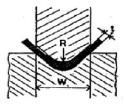
10. 선반용 바이트의 주요 각도 중에서 바이트의 옆면 및 앞면과 가공물과의 마찰을 줄이기 위한 각도는?
11. 소성가공에 포함되지 않는 가공법은?
12. 연삭 숫돌에 대한 설명으로 틀린 것은?
13. 사인바에 대한 설명 중 틀린 것은?
14. 4개의 조가 단독으로 이동하며, 고정력이 크고, 불규칙한 가공물, 편심된 가공물 등을 정밀하게 고정할수 있는 척은?
15. 판 두께 5mm인 연강 판에 직경 10mm의 구멍을 프레스로 블랭킹(blanking)하려고 한다. 이때 프레스의 평균속도 7m/min, 재료의 전단강도 300 N/mm2, 기계의 효율 80%일 때 총소요동력(Pt)은 약 몇 kW 인가?
16. 절삭유제를 사용하는 목적이 아닌 것은?
17. TTT선도에서 Mf 점과 Ms점 사이 (100~200℃ 정도)에서 담금질을 하여 항온변태를 행하는 방법은?
18. 용접부에 생기는 잔류응력을 없애려면 다음 중 어떻게 하는 것이 가장 적합한가?
19. 제관 가공에서 이음매 없는 관을 가공하는 방법 중 독일에서 발명된 가공법으로 2 개의 롤이 수평면에 대하여 9~12° 각도로 서로 반대 방향으로 경사진 롤을 사용하는 가공법은?
20. 고에너지속도 성형법(high energy rate forming)에 해당하지 않는 것은?
2과목: 재료역학
21. 그림과 같이 두 개의 물체가 도르래에 의하여 연결 되었을 때 평형을 이루기 위한 힘 P는 몇 kN 인가? (단, 경사면과 도르래의 마찰은 무시한다.)
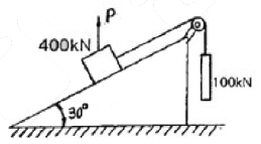
22. 어떤 평면상에 작용되는 수직 응력과 전단 응력이 σχ = -50 MPa, σy = 10 MPa, τχy = -40 MPa 이 다. 이 평면에 작동되는 최대 주응력은 몇 MPa 인가?
23. 그림과 같은 단붙이 봉에 인장하중 P가 작용할 때, 축의 지름을 d1 : d2 = 3 : 2로 하면 d1의 편에 발생하는 응력 σ1과 d2의 편에 발생하는 응력 σ2 의 비는?
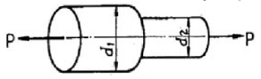
24. 한 변의 길이가 8 cm인 정사각형 단면의 봉이 있다. 온도를 20℃ 상승시켜도 길이가 늘어나지 않도록 하는데 280 kN의 힘이 필요하다. 이 봉의 선팽창계수(/℃)는? (단, 봉의 탄성계수 E = 210 GPa 이다.)
25. 안지름이 80 mm, 바깥지름이 90 mm이고 길이가 4 m인 좌굴 하중을 받는 파이프 압축 부재의 세장비는 얼마 정도인가?
26. 길이가 60 cm이고 폭(b) 2 cm, 높이(h) 3 cm인 직사각형 단면의 외팔보 자유단에 1kN의 집중 하중이 작용할 때 최대 굽힘 응력은 약 몇 MPa 인가?
27. 지름 10 mm 이고, 길이가 3 m인 원형 축이 716rpm으로 회전하고 있다. 이 축의 허용 전단응력이 160 MPa인 경우 전달 할 수 있는 최대 동력은 약 몇 kW 인가?
28. 그림과 같은 균일분포하중 ω kN/m 를 받는 단순보에서 중앙점의 처짐을 0으로 하고자 할 때, 아래에서 위로 받쳐주어야 하는 힘 P는? (단, 보의 굽힘 강성 EI는 일정하고, 자중은 무시한다.)
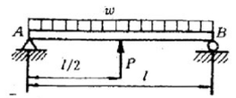
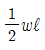
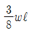
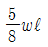
29. 왼쪽이 고정단인 길이 ℓ 의 외팔보가 ω의 균일 분포하중을 받을 때, 굽힘모멘트 선도(BMD)의 모양은?
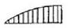
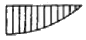
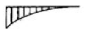
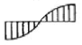
30. 그림과 같은 일단 고정 타단지지 보에 등분포 하중 ω가 작용하고 있다. 이 경우 반력 RA 와 RB는? (단, 보의 굽힘강성 EI 는 일정 하다.)
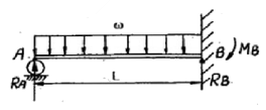
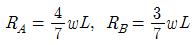
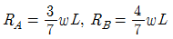
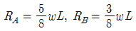
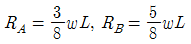
31. 지름 4 cm인 균일단면봉이 인장하중을 받고 인장응력 750 MPa 이 생겼을 때, 지름은 약 몇 mm 줄어드는가? (단, 포아송비는 0.3, 탄성계수는 200GPa 이다.)
32. 그림과 같은 외팔보에 있어서 고정단에서 20㎝ 되는 점의 굽힘모멘트 M은 몇 kN.m 인가?
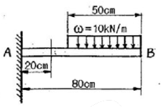
33. 단면 치수가 8㎜ × 24㎜인 강대가 인장력 P =15 kN을 받고 있다. 그림과 같이 30° 경사진 면에 작용하는 전단 응력은 약 몇 MPa 인가?
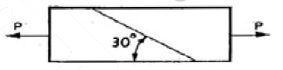
34. 그림에서 빗금 친 부분의 도심을 구한 것은? (단, 곡선의 방정식은 y3 = 2x이고, x 와 y는 cm 단위이다.)
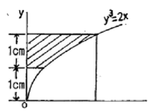
35. 직경이 1.5 m, 두께가 3 mm인 원통형 강재 용기의 최대 사용강도가 240 MPa 일 때 지탱할 수 있는 한계압력은 몇 kPa 인가? (단, 안전계수는 2 이다.)
36. 다음과 같은 균일 단면보가 순수 굽힘 작용을 받을때 이 보에 저장된 탄성 변형에너지는?
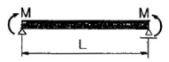
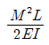
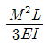
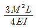
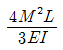
37. 다음 그림과 같은 구조물에서 비틀림각 Θ는 약몇 rad 인가? (단, 봉의 전단탄성계수 G = 120 GPa 이다.)
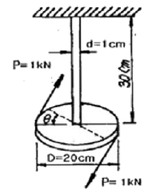
38. 그림과 같은 외팔보가 집중 하중 P를 받고 있을때, 자유단에서의 처짐 δA 는? (단, 보의 굽힘 강성 E I 는 일정하고, 자중은 무시한다.)
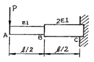
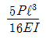
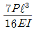
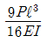
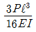
39. 동일 재료로 만든 길이 L, 지름 d인 축과 길이 2L, 지름 2d인 축을 동일 각도만큼 비트는데 필요한 비틀림 모멘트의 비 T1 / T2 의 값은 얼마인가?
40. 막대의 한 끝이 고정되고 다른 끝에 집중 하중이 작용할 때, 막대의 양단에서 국부변형이 발생하고 양단에서 멀어질수록 그 효과가 감소 된다는 사실과 관계있는 것은?
3과목: 용접야금
41. 아공석강은 상온에서 어떤 혼합조직을 갖는가?
42. 담금질한 철강을 A1 변태점 이하의 일정 온도로 가열하여 인성을 증가시킬 목적으로 하는 열처리는?
43. 연강용 피복아크 용접봉의 심선 재료로 가장 적합한 것은?
44. 금속재료를 연화시키며, 조직의 균일화, 미세화, 표준화를 목적으로 그 성질을 개선하기 위해 일정 온도에서 일정시간 가열 후 비교적 느린 속도로 냉각시키는 열처리는?
45. 피복 아크 용접봉에서 피복제의 역할로 틀린 것은?
46. 용접 열 영향부의 열 사이클에서 중요한 인자가 아닌 것은?
47. 주철에 첨가되어 흑연화를 촉진하는 원소는?
48. 연강용 피복아크용접봉의 종류 중 E4324의 피복제 계통은?
49. 연강용 피복아크 용접봉의 피복제 성분 중 합금제에 해당하지 않는 것은?
50. 청열취성에 가장 큰 영향을 미치는 것은?
51. 탄소강 중에서 적열취성의 원인이 되는 원소는?
52. 용접부의 용접금속에 대한 설명으로 맞는 것은?
53. 다음 열전대 중 가장 낮은 온도에서 사용하는 것은?
54. 체심 입방격자(BCC)에 속하는 금속은?
55. 용접부의 현미경 조직과 기계적 성질이 현저하게 변화하는 영역으로 취성이 가장 큰 부분은?
56. 탄소 당량을 설명한 것으로 옳은 것은?
57. 용접 입열량에 영향을 주지 않는 것은?
58. 용접균열 중 고온균열의 종류가 아닌 것은?
59. 다음 중 비중이 작은 것에서 큰 순서대로 나열된것은?
60. 고온균열에 관한 설명으로 옳은 것은?
4과목: 용접구조설계
61. 용접시공설계에 대한 설명으로 알맞은 것은?
62. 강판의 두께 12mm, 용접부 길이 200mm를 V 홈으로 맞대기 용접 이음을 할 때 인장력(kgf)은 얼마까지 허용할 수 있는가? (단, 용접부 이음 효율은 85%, 강판의 최대인장강도는 45kgf/mm2, 안전계수는 3 이고, 용접부는 불용착부가 존재하지 않는 완전 용접부로 한다.)
63. 반발을 이용하는 경도시험 방법으로 맞는 것은?
64. 초음파 탐상법에서 통상적으로 적용하는 주파수(MHz)로 가장 적합한 것은?
65. 용접구조물의 피로강도를 향상시키는 방법으로 틀린 것은?
66. 용접부의 기본 기호에서 l l l 의 명칭은?
67. 연강 용접에서 정적강도가 큰 것에서 작은 것으로 순서가 맞는 것은?
68. 용접 잔류 응력은 강구조물의 중요한 유해 요소가 되고 있는데 이와 가장 관계가 먼 것은?
69. 용접성을 이음성능과 사용성능으로 구분할 때 이음 성능에 해당하는 것은?
70. 필릿 용접부의 용접 비용 계산 방법에서 목길이(다리길이) 10mm의 필릿용접부의 환산계수는 약 얼마인가?
71. 맞대기 용접이음에서 용접부의 굽힘응력을 구하는 식은? (단, M은 굽힘 모멘트, ℓ은 용접 유효길이, h는 모재의 두께이다.)
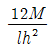
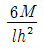
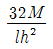
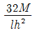
72. CO2 가스용접에서 비교적 저전류(약 200A 이하)로 용접하는 경우에 발생하며, 모재에 대한 입열이 적고 용입이 얕기 때문에 박판이나 이면비드 용접에 널리 응용되는 용적이행 형태는?
73. 측면 필릿이음에서 용입을 고려한 용입의 루트부터 필릿 용접의 표면까지의 최단거리를 무엇이라고 하는가?
74. 리벳 이음에 비교하여 용접 이음의 특징 설명으로 틀린 것은?
75. 융접(fusion welding)에 해당되는 것은?
76. 맞대기 이음부에 틈새가 10mm 발생하였을 때 보수 방법으로 가장 적합한 것은?
77. 용접균열 시험법에 해당 되지 않는 것은?
78. 용접 잔류 응력을 경감하는 방법 중 틀린 것은?
79. 용접예열의 설명으로 틀린 것은?
80. 용접부 검사법의 분류 중 기계적 시험법이 아닌 것은?
5과목: 용접일반 및 안전관리
81. 불활성 가스 아크 용접(inert gas arc welding)에 사용하는 가스는?
82. 압접 방식 중에서 저항용접의 종류가 아닌 것은?
83. 용접 금속과 모재와의 경계는?
84. 용접 후 검사 결과 용접부에 기공이 발생하였다. 기공의 발생원인으로서 적당한 것은?
85. 가스 절단 속도에 대한 설명으로 틀린 것은?
86. 용접기의 1차 측에는 안전스위치와 퓨즈를 설치하여야 하는데, 용접기가 27kVA 이고 1차 입력전압이 300V 일 때 퓨즈 용량은?
87. 용접부 시험방법 중 용접성 시험의 종류가 아닌 것은?
88. 교류 아크 용접기에서 가동철심형의 특징 설명으로 틀린 것은?
89. 10-4 ~ 10-6 mmHg 정도의 고 진공에서 수행되는 용접법은?
90. 가스용접봉의 선택시 주의사항이 아닌 것은?
91. 용접봉의 피복제 중 산화티탄(TiO2)을 약 35% 정도포함한 용접봉으로서 슬래그 생성계이며 아크는 안정되며 스패터가 적고 슬래그의 박리성도 대단히 좋아 비드(Bead) 표면이 고우며 작업성이 우수한 것은?
92. 아세틸렌가스의 사용압력(kgf/cm2)은 얼마 이하가 좋은가?
93. 저수소계 피복 아크 용접봉의 특성이 아닌 것은?
94. 피복 아크 용접에서 균열을 방지하기 위한 방법이 아닌 것은?
95. 피복아크용접봉의 피복제의 역할에 해당되는 것은?
96. 용적(熔滴)이 이행(移行)하는 상태를 분류한 것 중 틀린 것은?
97. 피복아크 용접봉의 취급사항으로 틀린 것은?
98. 서브머지드 아크 용접의 특징 설명 중 옳은 것은?
99. 직류 아크 중의 두 극의 전압강하는 주로 무엇에 의하여 정해지는가?
100. 원판상의 롤러 전극사이에 용접할 2장의 판을 두고 가압 통전하여 전극을 회전시키면서 연속적으로 점 용접을 반복하는 전기저항 용접법은?